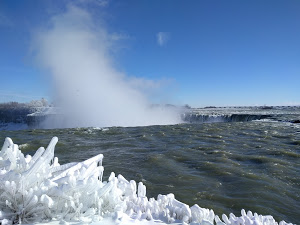

|
渔家傲 * 三载春秋又七
凉菜苦肉嚼无味，哗市独行汤不醉。漆红官碟已十岁。愁与泪，一入他乡身难退。
稚雀戏林困几落，孤鹰破空览四座。是非两仪渐识破。成与过，回看风霜盼不惑。
-- 7月9日2019于新泽西Fort Lee
|
 |
|
再聚
萧萧寒夜月如灯
花椒温酒喧嚣声
痴谈笑弄少年心
一杯尽饮锥魂梦！
只是抬头又相逢
-- 1月27日2019于新泽西Fort Lee
|
|
|
秋山倒镜寂寥何，平湖三里感过客；
横木成帘纷繁时，枯枝几叶思来年。
-- 11月7日2018 幸与曹约翰弟兄共作
|
|
|
倾盆暴雨随风，飞流瀑布依山
翻天覆地之能，蜿蜒曲折委蛇
随波逐流奈无？随遇而安泰然？
雾起冰城迷离，霜结歧路难行
-- 4月16日2018于新泽西Fort Lee
|
 |
|
春时挂蕾漫芬芳
回头已放百里香
天涯海角惜难近
愿得安好美无双
-- 12月15日2017新泽西Fort Lee
|
|
|
满江红*再见面
匆匆别父，又四载，痛去疤留。
夜倚窗，满杯独酌，盘头苦思。
昨日笑谈诗词间，一朝两别天地痕。
漫长路，悲欢离合复，为何故？
塘边屋，几捧沙；功名状，四角黄。
都已过，唯念满席欢乐。
今世幸得永生道，此刻卸去忧愁绕。
待月明，天堂乐园地，再见面。
-- 12月21日2016于新泽西Secaucus
|
|
|
遥送西行
秉烛轻声似独行
众亲百里心皆灵
旧时欢笑且紧记
祝福祈祷不言明
相见再叙七年情!
-- 6月1日2016于广州天河
|
|
|
阴雨稠泥马未停
卸甲归营手难提
但举佳酒小一泯
来日再杀三千敌
-- 12月2日2015于新泽西Hoboken
|
|
|
相知
谁手轻探少女肩
惊其怒视脸遮霾
路客笑问汝可知
背包大展似花开
-- 3月7日2015于纽约城
|
|
|
初识
纵横马路身身黑
垂头闭耳速速行
平影虽交人不语
匆忙冷漠使心惶
-- 3月4日2015于纽约城
|
|
|
秋风一扫群鸟飞
明年新春几只回？
漂洋过海虽万里
莫忘看顾家中情
-- 12月13日2014于新泽西机场
|
|
|
记史蒂芬斯登坡
呼啸声，雪与风，一路长坡谁敢登？
逆风进，踏雪行，眼如金石心如磬。
至极处，再回顾，笑看人生半点苦！
-- 2月3日2014 于新泽西Hoboken
|